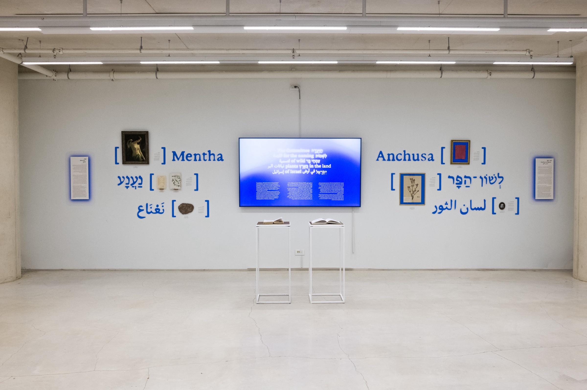
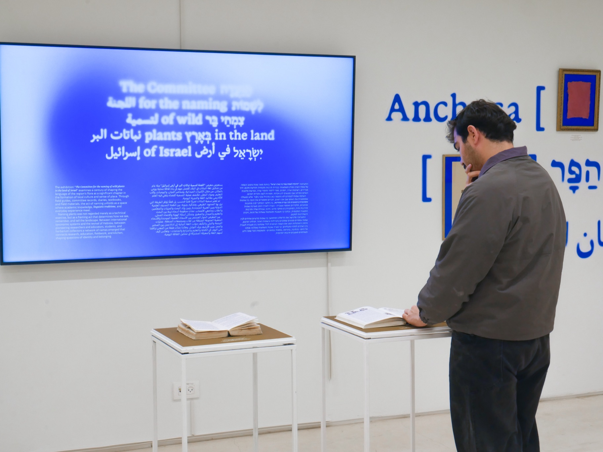
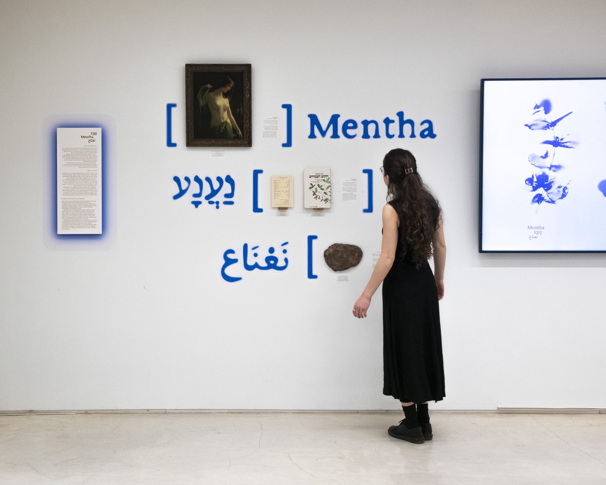
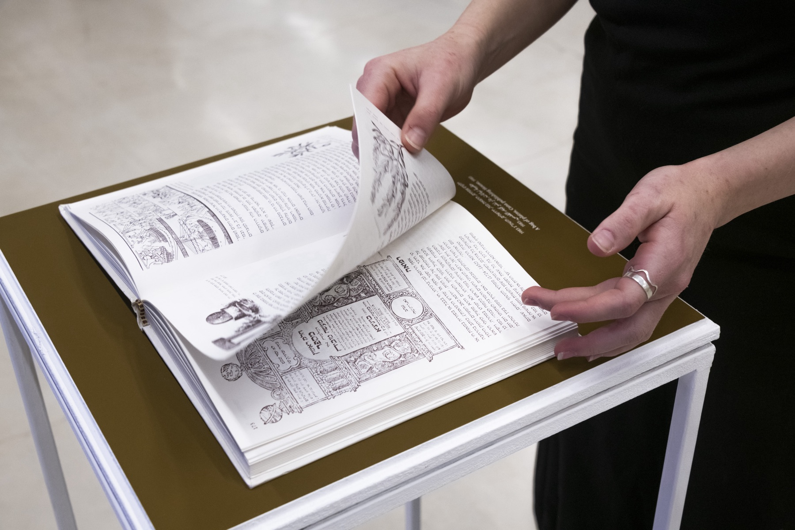
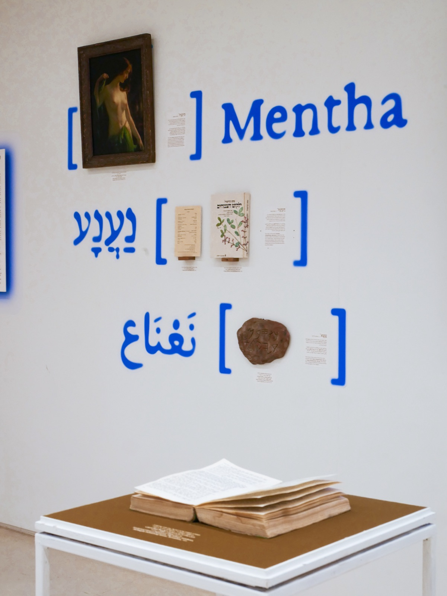
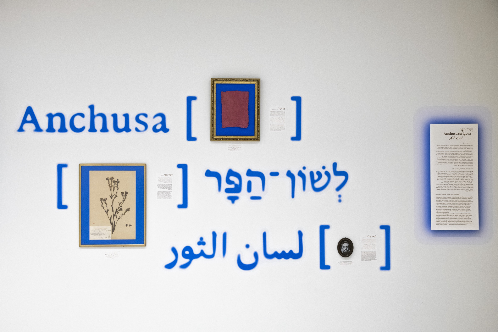
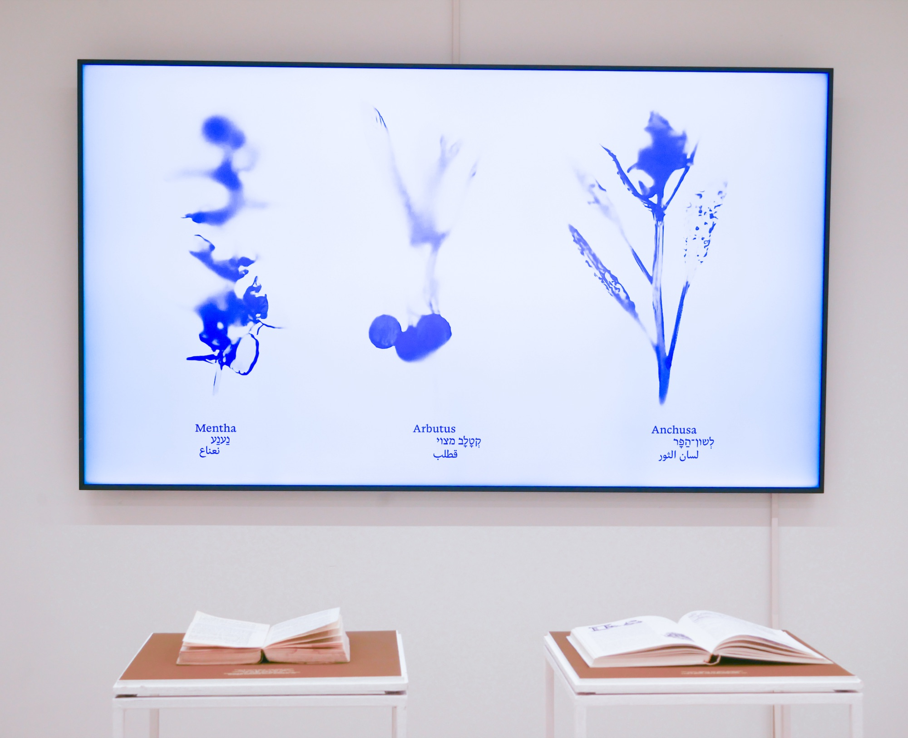

ETYMOLOGY OF
WILD PLANTS
Description
Exhibition Design
2026
Academic · Bezalel
“The Committee for the Naming of Wild Plants in the Land of Israel” examines a century of shaping the language of the local flora through field guides, committee records, diaries and textbooks. The exhibition places the word itself at the center as an autonomous display object, revealing it as a meeting point of myth, science, tradition and identity.
In collaboration with the Botanical Research Dept., Hebrew University


Working with botanical researchers at the Hebrew University of Jerusalem, we explored how words emerge, evolve, and gather meaning across languages. Blurred letterforms and vivid blue give visual form to this process, capturing the space between imagination
and definition.

Square brackets [ ] frame objects connected to the origins and cultural meanings of individual words. The wall composition invites visitors to move between languages, objects, and interpretations, tracing the unexpected paths through which words take shape.


